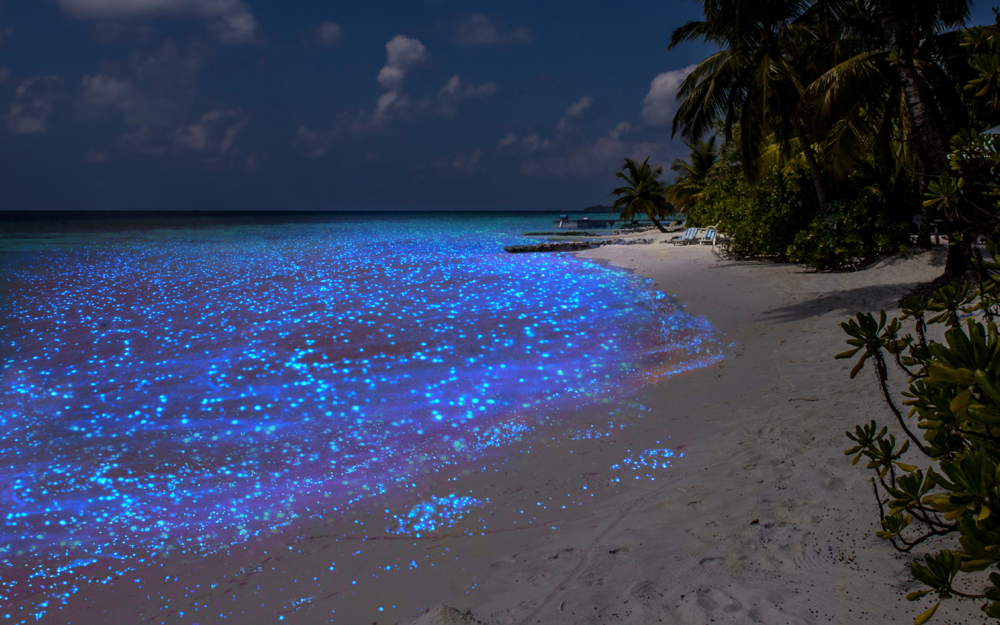
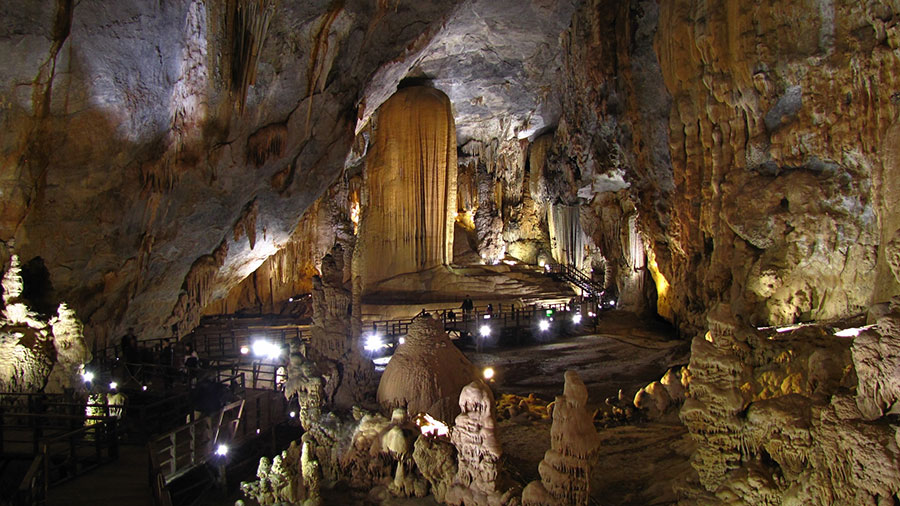

Топ 6 самых красивых мест в мире по мнению MaksimWBC
Всем привет. Сегодня вы увидите на мой взгляд самые краивые места в мире, которые обязательно стоит посетить.
Радужные Горы, Перу
Самые известные Радужные горы находятся в Китае. А о том, что такие горы есть и в Перу, мало кто знает. Виникунка (Vinicunca) - так они называются на языке индейцев кечуа, что буквально означает "горы цвета радуги". Красота Радужных гор манит путешественников со всего мира, и туристы включают экскурсию к Виникунке в программу своего тура по Перу.
Где находятся Радужные горы в Перу? Радужные горы находятся в 100 километрах от Куско в провинции Киспиканчис (Quispicanchis) на высоте 5200 метров над уровнем моря среди снежных вершин и бирюзовых лагун. Оттуда открывается великолепный вид на ледник Аусангате - священную гору инков, где каждый год собираются паломники для празднования дня Qoyllur Rit’i.

Цветочные поля, Нидерланды
Тюльпановые поля в Нидерландах собирают вокруг себя миллионы туристов со всего мира. Наверняка, вы видели фотографии с бескрайними полями разноцветных тюльпанов и ловили себя на мысли, что готовы сорваться в эту красоту прямо сейчас. Узнали себя? Скорее читайте, где находятся самые красивые поля тюльпанов в Нидерландах и как до них лучше добраться.
Во всем мире эти поля известны как тюльпанные. Хотя на самом деле это еще и гиацинты с их невероятным запахом, и прекрасные нарциссы, с которых начинается каждый год цветочная вакханалия. Март – это время гиацинтов и нарциссов, а тюльпаны вступают в апреле и до середины мая. Каждый год туристы стремятся попасть в цветочный рай, парк Кекенхоф. Парк действительно того стоит, он прекрасен.
Звездное море, Мальдивы
Отдыхая на Мальдивах обязательно посетите остров Ваадху (Vaadhoo Island). Он привлекает множество туристов уникальной достопримечательностью — светящимися пляжами. Это потрясающее зрелище, которое буквально завораживает своей красотой. Кажется, что звездное небо упало в воду и сверкает тысячами огоньков, разрезая тьму.
Остров Ваадху на Мальдивах относится к одному из обитаемых островов атолла Раа и славится комфортным тропическим климатом, красивейшей природой и безмятежными водами Индийского океана. Все это делает его круглогодичным популярным курортом для отдыха молодоженов и семейных пар. Он находится в окружении кораллового рифа, где обитает множество красочных рыб — здесь отличное место для дайвинга. Однако, самая желанная достопримечательность острова — светящиеся пляжи.
Водопад Виктория, Зимбабве
Величественная красота и мощь, непрекращающийся ни на секунду гул, миллион брызг, образующих облако пара и туман, ощущение опасности, когда стоишь на краю, и над всем этим величием ослепительная радуга — именно такую картину вы сможете наблюдать на водопаде Виктория (Victoria Falls), одном из самых больших водопадов мира.
Находится он на реке Замбези, которая протекает на границе между Зимбабве и Замбией. Его открыл англичанин Дэвид Ливингстон, вполне справедливо назвавший водопад самым замечательным зрелищем в Африке, и давший ему впоследствии имя своей королевы. Почти на всей своей протяженности Замбези — спокойная река, но характер ее резко меняется меняется, когда совершенно неожиданно базальтовое плато, по которому она течет, срывается, и река стремительно падает вниз с высоты обрыва, разделившись на несколько потоков. А высота там действительно немаленькая — 108 метров, что очень много для водопадов такой ширины. Напротив водопада возвышается еще один базальтовый утес, сплошь покрытый тропическим лесом.

Пещера горной реки, Вьетнам
В первую очередь, пещера Шондонг поражает своими размерами. По данным, которые есть на сегодняшний день, объем внутри достигает 38,5 млн. кв. м — здесь запросто поместится здание высотой в 40 этажей. Внутри находится порядка 150 пещерных залов, некоторые достигают 200 м в высоту и 150 м в ширину. Ученым удалось пока исследовать участок протяженностью 6,5 км. Но уже понятно, что Шондонг является самой большой в мире пещерой.
Осматривая пещеру Шондонг, здесь можно увидеть загадочные рисунки, сделанные самой природой, древние окаменелости, огромнейшие сталагмиты и сталактиты разнообразных форм. Тут есть сталагмиты, напоминающие по форме кактусы, из-за чего это место прозвали “Садом кактусов”. А один из сталагмитов с забавным названием “Рука собаки” считается самым высоким сталагмитом мира — его высота достигает 70 м. Еще одной изюминкой пещеры является каменный жемчуг. Стены пещер от воздействия воды расслаиваются, в результате чего между слоями формируются большие жемчужины. Хоть они и не драгоценные, для ученых они несут огромную ценность.

Национальный парк Хитачи, Япония

Парк Хитачи раскинулся на территории 350 га (для посетителей открыто 200 га), его основали в 1991 году на месте бывшей военной базы США. Сегодня это место является истинным цветочным королевством, ведь здесь произрастают всевозможные растения: нарциссы, тюльпаны, маки, лилии, сакура. В мае японский парк Хитачи похож на огромное небесно-голубое покрывало, так как в это время на холмах расцветают немофилы — американские незабудки. Данное событие отмечается проведением фестиваля “Гармония немофил”, в этот период в парк Хитачи-Сисайд приезжают тысячи туристов, чтобы собственными глазами увидеть это удивительное зрелище.
В начале июня начинают цвести маки — поля становятся ярко-красными, а уже к июлю здесь появляются зеленые пушистые шары кохии. Несмотря на свою показательную “мягкость”, на ощупь это растение довольно колючее. К сентябрю зеленая кохия меняет свой цвет на оранжевый и багрово-красный, создавая потрясающий контраст с ярким голубым небом. С середины осени начинается время цветения космеи. Вместе с кохией такой тандем создает ярчайшую палитру — эти сказочные пейзажи должен увидеть в своей жизни каждый.
Скала Дан Брист, Ирландия

Приблизительно в 5 км к северу от деревни Балликасл, в ирландском графстве Мейо, находится удивительный мыс под названием Даунпатрик-Хед. возвышаясь на 38 метро выше моря, он открывает захватывающие дух виды Атлантики и высокие утесы вдоль берега. Название Даунпатрик возникло со времени, когда сам Св. Патрик основал церковь в этих местах. Вы можете все еще увидеть руины церкви, с каменным крестом наверху. Это было однажды популярным местом назначения для паломничества, и сегодня толпы все еще собираются здесь в поcледнее воскресенье июля – чтобы провести мессу. Во время Второй мировой войны тут был построен пост береговой охраны, который теперь используется, чтобы исследовать птиц, которые гнездятся на высоких утесах.